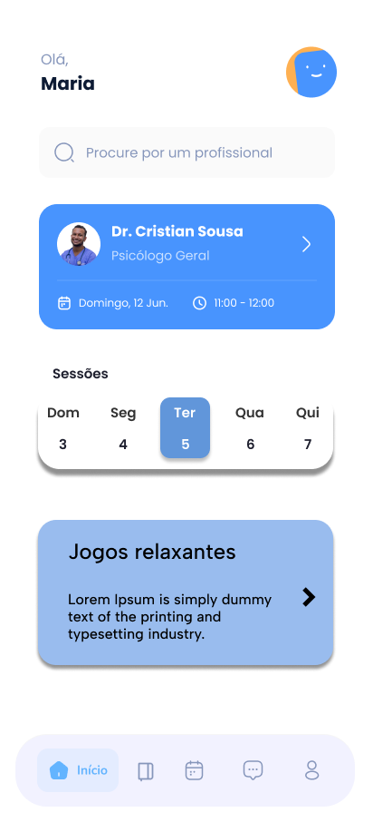
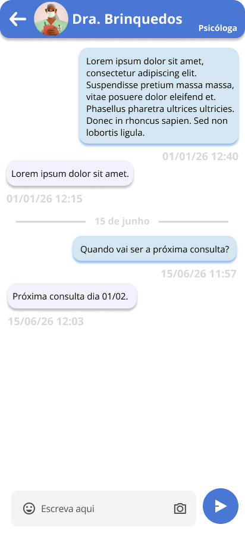
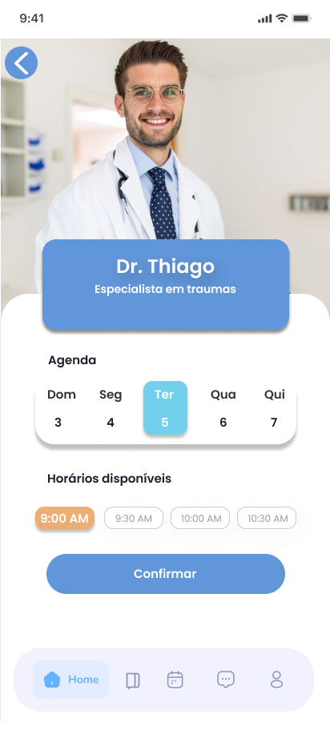
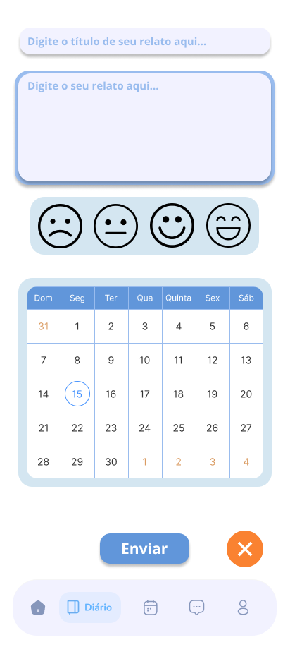

O que é NeurAlly?
NeurAlly é um aplicativo focado em saúde mental, sendo possível realizar o agendamento de consultas, junto com um diário emocional. No software, cada usuário poderá pesquisar por um profissional desejado, e marcar uma consulta, seja ela online, presencial, ou híbrida.





- Conexão com profissionais de saúde mental qualificados;
- Ferramentas para saúde psicológica;
- Possibilidade de consultas à distância;
- Praticidade e acessibilidade.
"Usei este app e me ajudou muito a encontrar profissionais atenciosos e qualificados de acordo com o meu perfil, além de aprender a regular minhas crises de ansiedade."
- Diego Ernesto"A facilidade para encontrar psicólogos especializados e agendar consultas online mudou minha rotina. Excelente experiência!"
- Juliana Ramos"O diário de emoções e os jogos de relaxamento são incríveis. Consigo me acompanhar todos os dias de forma simples."
- Carlos Eduardo